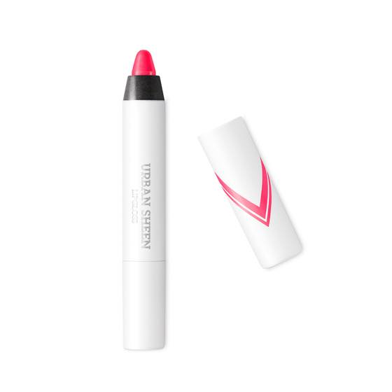
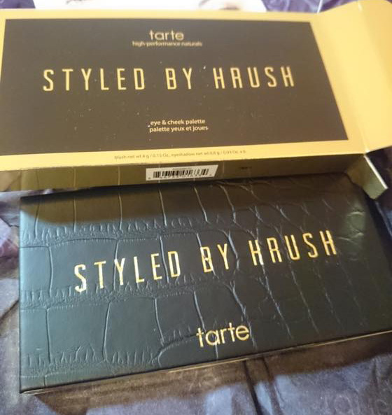

늦었지만 의식의 흐름에 따라 써보는 2016 잘산 물건들 :)

립스틱이 유명하다고 해서 SMOOTH TEMTATION / URBAN SHEEN 을 구매해봤는데
생각보다 별로네 - 에서 - 의외로 괜찮다고 의견이 바뀜.
SMOOTH TEMTATION 붉은색 립스틱 - 특징하나없는 빨강 립스틱인데 맘에듭니다 :3
그냥 같이 구매한 분홍색이 나랑 안어울리는 거였음 ^^;;;;
네일색상도 맘에들고 올해 잘산물건 중 하나 입니다
브랜드 방랑자로
여기저기 기웃거리면서 궁금한거 사서 써보는게 취미입니다 ^^
올해 맘에든 제품
샤넬 - 스틸로 214 메세지 / 아이섀도우 4구 268
스틸로 214 메세지
쵹쵹하고 발림성 좋고 색상 무난해서 파우치에 넣어다니면서 정말 잘 사용
4구 268 왼쪽 상단색을 눈썹 그리는데 부지런히 쓰고있습니다 ^^
이것도 질감과 색상 모두 내취향 둘다 뿌듯한 구매였어요 :)
디올 - Dior Addict Lipstick 976
샤넬 스틸로 다 써갈때쯤 이것도 쵹쵹하단 말에 낚여서 구입했는데
맘에듭니다 :)
올해 최고 잘 쓴 립스틱은 샤넬과 디올 이군욤.
확실히 파우치에 넣고 다녀야 쓰는데 속도가 붙는거 같아요 ^^
MAC 쿠션
백투맥하러 갔다가 충동구매했는데
이것도 처음엔 색상 너무 밝고 쿠션은 내취향 아닌가 보다... 에서 쓸수록 맘에 든 케이스
재구매 할까 고민중 입니다
다른브랜드로는 시세이도 쿠션이 궁금하군욤
겔랑 메테오리트 컴팩트 라이트 리빌링 파우더
이것도 MAC 쿠션처럼 처음엔 별로다 싶었는데 쓸수록 마음에 든 제품입니다 :)
효과있나? 싶다가도 안바르면 확실히 차이를 알 수 있습니다
+반대로 MAC 오로라는 그닥 취향이 아니었습니다 :p

타르트 리미티드에디션:: Styled by Hrush eye & cheek palette
무배에 낚여 구매하고 세관에 걸려 추가로 12파운드를 더낸......OTL
진정한 충동구매였는데 2016년 대박은 이 팔레트 입니다!
콤팩트 / 미니사이즈 / 여행용 팔레트 뭐 이런걸 좋아해서
잘 쓰지도 않으면서(......) 디자인 이나 구성이 귀여우면 이것저것 사보는데 스아실 활용도는 그닥 높지 않았더랬죠.
블러셔가 맘에들면 섀도우가 내취향이 아니라던가 색구성이 애매하다던가 ^^;;;;
근데 이 제품은 사이즈, 색 모두 맘에들어요 :D :D :D
진정 여행갈때 요거하나만 있으면 ok 인 아이템을 만나게 되었습니다 ^^

kitty 색상으로 눈썹그리고 pinch / smitten / royal 은 섀도우 + 블러셔 까지
싱글섀도우나 블러셔 없이 여행갈때 요거 하나 딱 들고가면 끗이에요.
이번에 일본 & 동유럽 댕겨올때 엄청 잘 사용했어요
뿌듯한구매였습니다 홋홋홋
크리니크 처비스틱
색조 별 기대안하고 사이즈가 쪼그만게 귀여워서(....) 구매했는데. 발색 질감 모두 훌륭합니다.
특히 03 mighties maraschino 색 늠 이뻐요 :)
NARS 사라문 컬렉션
미니 립스틱 CODIE
이것도 색상, 질감이 늠 취향
굉장히 부드럽게 발리고 촥붙어서 바를때 마다 감탄합니다 ^^
+ 뷰티제품은 아니지만 젤 뿌듯한 구매는 역시


LINDA FARROW 선글라스
여름내내 마구 감탄하면서 쓰고댕겼습니다
엄청 가볍고 편해요 ㅜㅜ 흑 린다페로우 다른 모델 하나 더 사고싶어요!!
이 선글라스 구입후 갑자기 선글라스에 꽂혀서 반년간 약 8개를 지르는 미친짓을 했더랬죠 -_-;;
요즘도 틈만나면 구경하고 있습니다 ㅋㅋㅋ
2017년 새해가 되었고 올해도 열심히 예쁜걸 찾아 의욕적으로 질러볼렵니다 ^^***
끗!